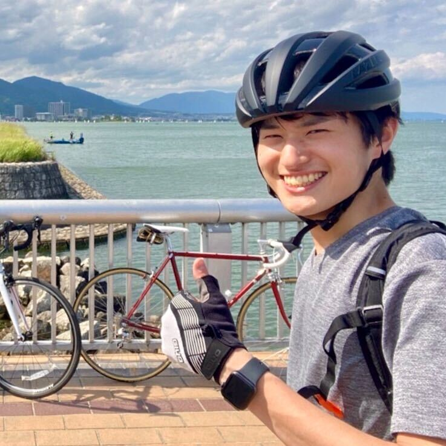
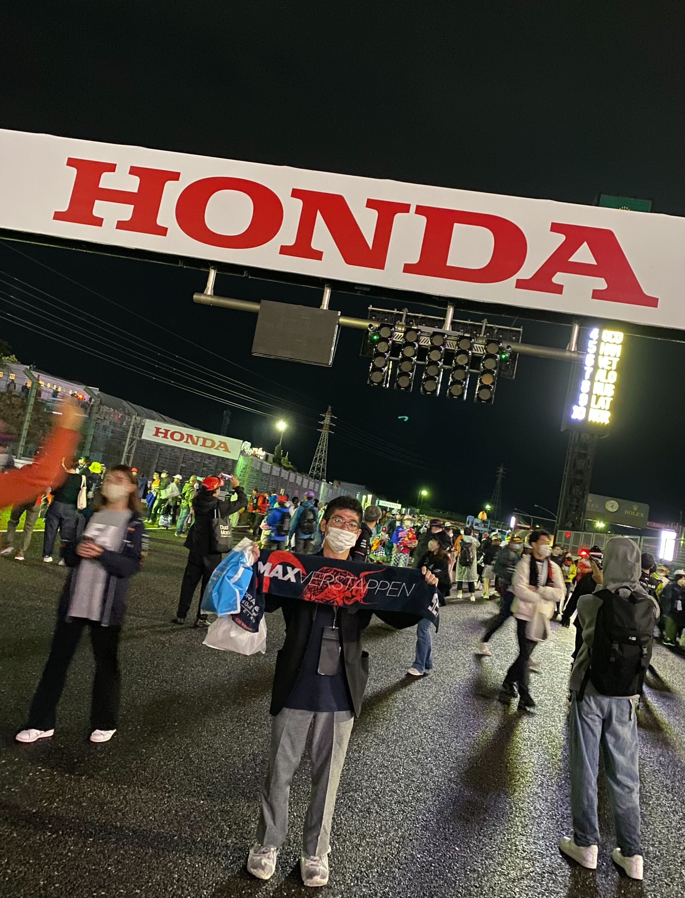

メンバー紹介
スタッフ
宇野 伸宏 教授 (Nobuhiro Uno, Professor)
- 研究テーマ
情報提供と交通行動，交通ネットワーク評価，ビッグデータを活用した交通分析，
ICTを利用した交通マネジメント，交通工学的視点での自動運転評価 - 業績(LINK)
松中 亮治 准教授 (Ryoji Matsunaka, Associate Professor)
- 研究テーマ
公共交通政策論，都市の賑わいとアメニティ，都市構造と交通，
持続可能な社会，都市環境評価，都市内交通シミュレーション，
交通施設整備制度・財源，プロジェクト評価 - 業績(LINK)
西垣 友貴 助教 (Tomoki Nishigaki, Assistant Professor)
- 研究テーマ
ビッグデータを活用した観光行動分析，シェアモビリティと公共交通の連携性
- 業績(LINK)
速水 裕子 秘書 (Yuko Hayamizu, Secretary)
- 経歴
2020年4月より着任
D1
Alvin Noviansyah
- 研究：都市内トリップパターンの動的変化の把握を目的とした
携帯電話位置情報データの活用 - 趣味：ゲーム，ジオラマ作り，彫刻
M2

汪 佳宜(Wang Jiayi)
- 研究：地方都市における大規模小売店舗立地と都市人口分布の関連分析
- 趣味：旅行，ゲーム，麻雀など
河村 佑真(Yuma Kawamura)
- 研究：公共交通運賃割引方式と高齢者の外出行動との関連性分析
- 趣味：猫，キャンプ，ゲーム

木野 快斗(Kaito Kino)
- 研究：地方鉄道の運行本数に着目した地方部の都市構造に関する経年的国際比較
- 趣味：サイクリング，自転車整備，歴史的建造物巡り
小西 秀明(Hideaki Konishi)
- 研究：地方鉄道の運行本数に着目した地方部の都市構造に関する経年的国際比較
- 趣味：サイクリング，自転車整備，歴史的建造物巡り

藤森 蓮(Ren Fujimori)
- 研究：全国の居住誘導区域内における生活サービス施設への徒歩アクセス性と
人口密度・公共交通利便性・災害危険性との関連分析 - 趣味：音楽，自転車

松尾 悠(Yu Matsuo)
- 研究：高速道路の渋滞緩和を目指した
ゲーミフィケーションによる行動変容に関する研究 - 趣味：スポーツ観戦，テニス
M1
奥村 佑一郎(Yuichiro Okumura)
- 研究：全国のニュータウンの計画人口・計画戸数充足率と立地条件ならびに事業特性との関連分析
- 趣味：プロ野球観戦，読書
下岸 楓季(Fuki Shimogishi)
- 研究：土地利用・交通モデルを用いた居住誘導施策の評価
- 趣味：バスケ（観戦も！）
野口 徹(Toru Noguchi)
- 研究：連続車両軌跡データを用いたあおり運転が運転挙動と事故リスクに与える影響に関する研究
- 趣味：ヴァイオリン，テニス
藤原 正智(Masatomo Fujiwara)
- 研究：サービス水準を考慮した地方鉄道のバス転換が駅勢圏人口ならびに公共交通分担率に与える影響分析
- 趣味：音楽鑑賞，ゲーム
森永 拓都(Takuto Morinaga)
- 趣味：旅行，ドライブ，海外サッカー
B4
坂井 真論(Maron Sakai)
- 趣味：野球，旅行，ドライブ
寺川 凪(Nagi Terakawa)
- 趣味：京都市内巡り，ランニング

尾本 凌河(Ryoga Omoto)
- 趣味：ドライブ，モータースポーツ観戦
高石 俊輔(Shunsuke Takaishi)
- 趣味：テニス，プロ野球観戦
研究生
张 梦雅(Zhang Mengya)
- 研究：接続環境における高速道路の交通運行状況認識およびリスク分析
- 趣味：旅行・ガーデニング
王 智娴(Wang Zhixian)
- 研究：未定
- 趣味：音楽・旅行・散歩
Kim HeeSoo
- 研究：新しい交通手段による人口および都市社会構造の変化の分析
- 趣味：ウィンタースポーツ・ハイキング・音楽鑑賞など